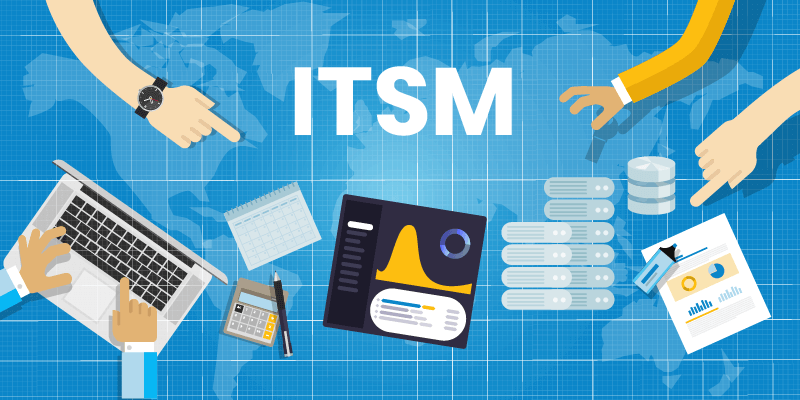

Information Technology Service Management, ITSM refers to the design, management and delivery of IT services to customers and includes processes and procedures to achieve maximum efficiency and effectiveness.
This means that the support team will have a clear opportunity to connect with new customers, improve collaboration and communication between teams, while saving time through process automation.
These benefits enable better delivery of IT services and increased customer satisfaction while leveraging Salesforce CRM capabilities.
ITSM Integration with Salesforce Provides
- Streamlined Incident Management: You can easily track and manage incidents reported by customers or employees. This integration allows for seamless creation, tracking, and resolution of incidents directly within the Salesforce platform.
- Enhanced Customer Support: Can provide better customer support by leveraging Salesforce robust customer relationship management (CRM) capabilities. Customer support agents can access customer information, case history, and other relevant data within Salesforce, enabling them to provide more personalized and efficient support.
- Increased Efficiency and Productivity: This automation reduces the chances of errors, saves time, and increases the productivity of IT teams and other departments relying on IT services.
- Enhanced Visibility and Reporting: Salesforce offers robust reporting and analytics features that can be leveraged to gain insights into ITSM processes, service metrics, and overall performance. With ITSM integrated into Salesforce, you can generate real-time reports, dashboards, and metrics, enabling informed decision-making and continuous service improvement.